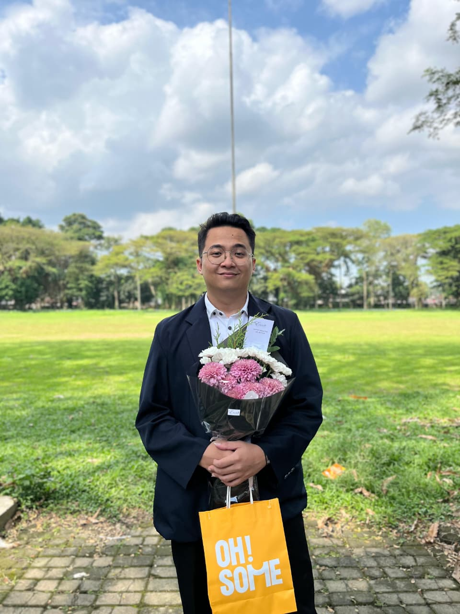
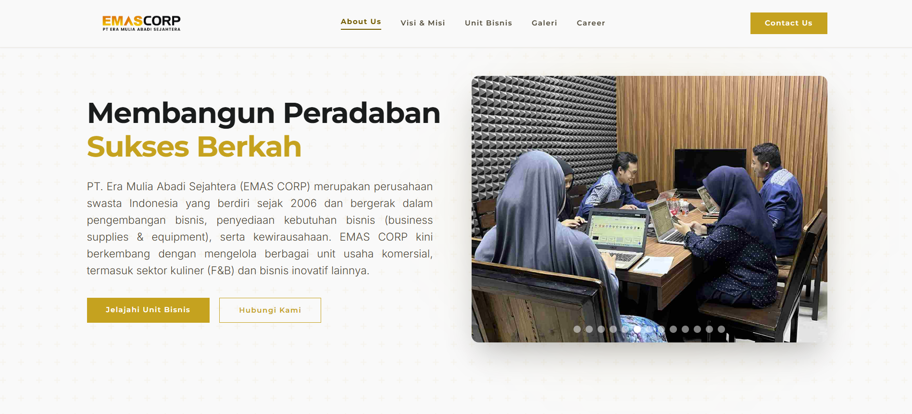
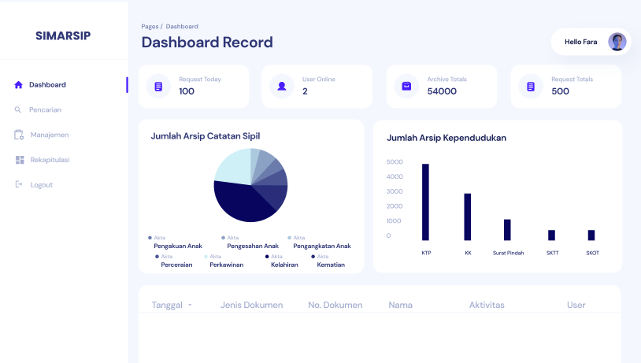
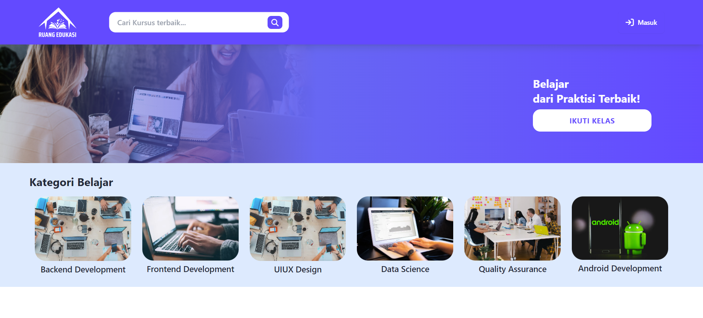
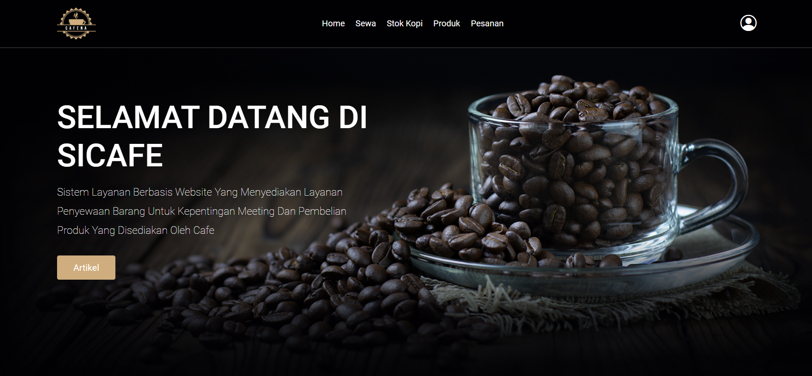
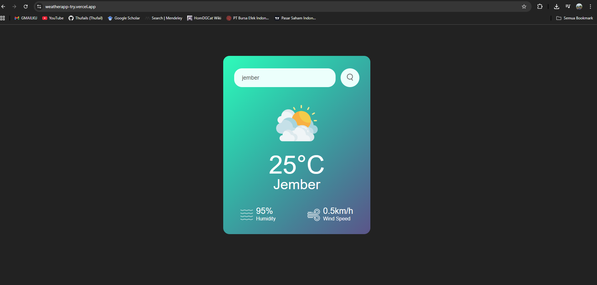
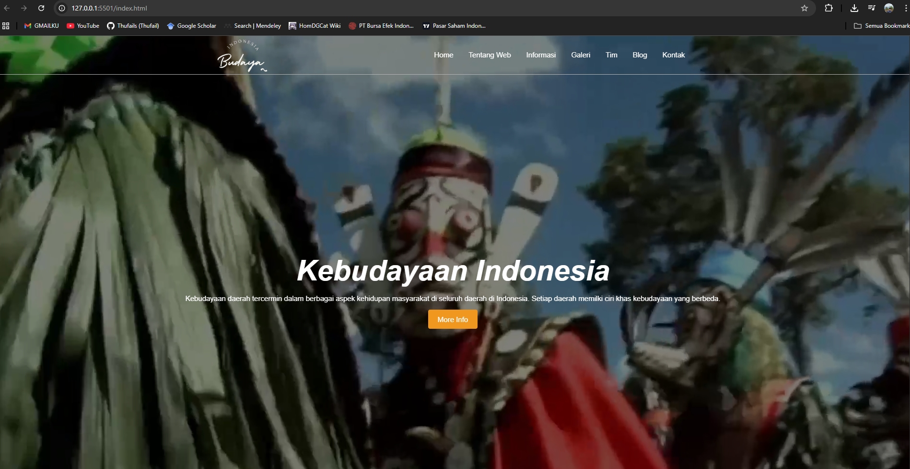

Hi,
I'am Rafi
Web Developer
Contact
About Me

Hi,
I am an Information Systems graduate with a strong interest in IT and web development. This portfolio showcases my skills, projects, and experiences throughout my academic and professional journey.
Name: M. Rafi Thufail
Date of birth: August 21, 2002
Email: tupelrafi@gmail.com
Phone: +6285936163352
Education
2021-2025
Bachelor Degree in Computer Science
Jember University
2018-2021
Senior High School 1 Jember
Experience
October 2026 - Now
IT Support - Web Developer
Yayasan Pondok Entrepreneur Usman Bin Affan- Maintain and troubleshoot the organization's hardware, software, and network systems.
- Develop and maintain the organization's website, focusing on performance and user experience.
- Work with other teams to implement IT solutions that support organizational goals.
May - September 2026
Administrative Staff & IT Support
Sekolah Dasar An-Nur Baratan - Patrang- Helped prepare and maintain important school records, including student master records, attendance books, guest books, and permission books.
- Created and typed official school letter templates and assessment materials for daily tests, midterm exams, end-of-semester exams, and TKA.
- Contributed to documenting school activities on and off campus.
January - May 2026
Information Systems Administrator
Lembaga Kebijakan Pengadaan Barang & Jasa Pemerintahan- Managed internal training systems and resolved user issues.
- Coordinated technical troubleshooting and provided LMS/PPSDM support through call center services.
February - June 2024
Web Developer
Malang Government City - Population and Civil Registration Service- Built SIMARSIP, an archive management system, as the backend developer on a four-person team.
- Used Laravel and JavaScript for API development, database management, and web security.
- Helped improve archive management efficiency, system response speed, and project delivery.
August - December 2023
MBKM Indepent Study
PT Lentera Bangsa Benderang Binar Academy- Organized API development for the Ruang Edukasi Massive Open Online Course (MOOC) app and managed its data and servers.
- Collaborated with the Front-End Engineering team to build API endpoints and support smoother feature development.
Organizational Experience
2022-2022
UKM OMACO
Members of the public relations division- Shared organizational information with the public and supported audience engagement.
Skills
HTML5
95%
CSS3
85%
JAVASCRIPT
80%
PHP
90%
Python
70%
Projects

EMAS CORP
Company Profile Website
Kunjungi website
SIMARSIP
Backend Development

Ruang Edukasi
Backend Development

SiCafe
Fullstack Development

weatherApp
Backend JavaScript
Money Management Web
Laravel Project

Kebudayaan Web
Frontend Project